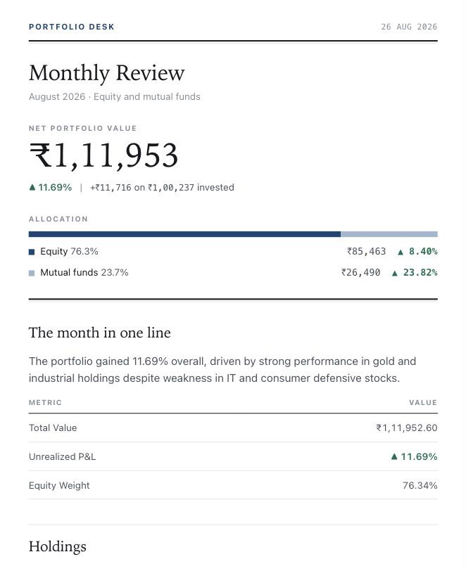
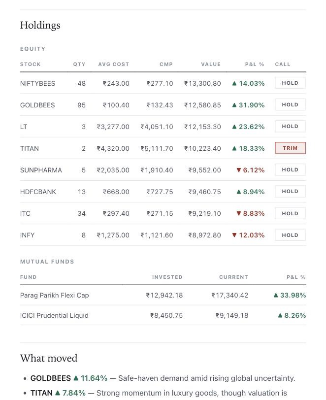

Zerodha · Gemini · GitHub Actions
On the first of every month this pipeline logs into Zerodha, prices your holdings against live market data, reads what the institutions did, and emails you a written research note on your own portfolio. Nothing to open, nothing to run, nothing to pay.
09:30:01 INFO Step 1/7 — Authenticating with Kite… [DEMO — skipped]
09:30:01 WARN DEMO MODE — hypothetical portfolio (8 stocks, 2 funds)
09:30:01 INFO Step 2/7 — Fetching holdings… [DEMO fixture]
09:30:01 INFO Fetched 8 equity, 2 MF, 0 open positions
09:30:02 INFO Step 3/7 — Enriching with live prices…
09:30:09 INFO GOLDBEES → GOLDBEES.NS ₹132.43
09:30:14 INFO HDFCBANK → HDFCBANK.NS ₹727.75
09:30:21 INFO Step 4/7 — Building portfolio summary…
09:30:21 INFO invested ₹1,00,237 · current ₹1,11,953 · +11.69%
09:30:22 INFO Step 5/7 — Gathering market research…
09:30:48 INFO Research context gathered (4,827 chars)
09:30:48 INFO Step 6/7 — Generating report via Gemini…
09:31:07 INFO Tokens — prompt: 4,968, response: 1,516
09:31:07 INFO Step 7/7 — Sending HTML email…
09:31:09 INFO Done. Report sent.The output
One email, built as a printed research note: a masthead, a headline figure, ruled tables of every position, and a set of calls you could place as orders tomorrow. It renders the same in Gmail, Outlook and Apple Mail, on a laptop or a phone.


The single thing that moved the portfolio, and the three figures that matter.
Every equity position and every fund, with a one-word call: add, hold, trim or exit.
Three winners and three laggards, each with the reason — drawn from the research pulled that morning, or marked as unexplained.
Sector weights, and a plain reading of where the book is concentrated.
India first — FII and DII flows in ₹ crore, the RBI's stance, earnings themes — then the Fed, US yields, Brent and the dollar.
Three to five actions, most important first, each with the price that would trigger it. Not sentiments — orders.
Two or three names not currently held, with the level worth buying below.
How it works
Orchestrated by GitHub Actions on the 1st of every month at 9:30 AM IST. Every network call is bounded, and a failure emails you the traceback rather than failing silently.
Posts credentials to Kite's login endpoint, answers the TOTP challenge, and captures the enctoken its own web app uses — no Kite Connect subscription, no browser.
Pulls equity holdings, mutual fund holdings from Coin, and open positions, discarding anything fully sold.
Each position is valued against live Yahoo Finance data — price, P/E, sector, 52-week range — falling back to Kite's own last price if a lookup fails.
Totals, sector weights, and the winners and laggards — computed so a holding can never appear in both lists.
Scrapes FII/DII flow data, downloads brokerage PDFs from ICICI Direct and HDFC Securities, and extracts their text as grounding context.
Holdings plus that morning's research go to Gemini under a prompt that fixes the sections, the table shapes and the column alignment. Three models and three API keys form the fallback chain.
The markdown is rendered into a table-based HTML email — no flexbox, so no client can collapse the layout — and sent over Gmail SMTP.
Design decisions
The parts that took the most thought, and the failure each one prevents.
Kite Connect costs ₹2,000 a month and needs an OAuth redirect a cron job cannot complete. This logs in the way the web frontend does and reuses the enctoken, so the whole thing runs headless and free.
FII/DII flows and brokerage PDFs are fetched at run time and put in the prompt, so the note cites this month's numbers instead of whatever the model absorbed in training.
Qwen 3.8 on Groq, then Gemini across three keys — seven combinations. A Yahoo lookup that fails falls back to Kite's last price. One provider outage does not cost you the month's report.
A response that is blocked, truncated, or missing most of its sections is rejected and the next model is tried. A note cut off mid-table is worse than none at all, because it still looks deliverable.
The template is nested tables, not flexbox or grid. Gmail and Outlook strip modern layout CSS, which silently collapses a flex row into a stack — the tables render identically everywhere.
CI runners are UTC. A report generated just after midnight IST on the 1st would carry the previous month's name, so every timestamp goes through one shared clock.
Any uncaught exception emails you the traceback before exiting non-zero. A silent monthly job that quietly stopped six months ago is worse than no job.
--demo swaps in a hypothetical portfolio and logs the substitution loudly. Everything downstream — pricing, research, Gemini, delivery — still runs for real.
Built with
Getting started
Clone it, add your secrets, and leave it alone.
git clone https://github.com/akamaurya/portfolio-monitor.git
cd portfolio-monitor
pip install -r requirements.txt
cp .env.example .envpython main.py --demo --previewRuns the whole pipeline against invented holdings and writes the email to out/preview.html instead of sending it. Drop --preview to have it delivered.
Under Settings → Secrets and variables → Actions, add KITE_USER_ID, KITE_PASSWORD, KITE_TOTP_SECRET, GEMINI_API_KEY1, GMAIL_ADDRESS, GMAIL_APP_PASSWORD and RECIPIENT_EMAIL.
The workflow runs on the 1st of every month. You can trigger it by hand from the Actions tab, and you will hear from it either way — the report, or the traceback.
Running cost
| Service | Free tier | This uses |
|---|---|---|
| Zerodha Kite | Free — no Kite Connect app needed | 1 login / month |
| Yahoo Finance | Unmetered | ~20–50 lookups |
| Google Gemini API | 50 requests / day | 1 request / month |
| Gmail SMTP | 500 emails / day | 1 email / month |
| GitHub Actions | 2,000 minutes / month | ~5 minutes / month |
| Total | ₹0 | |